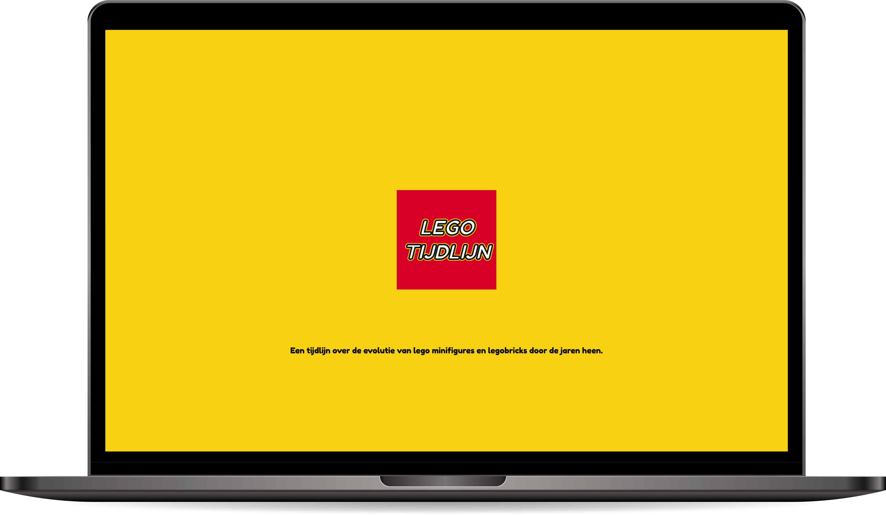
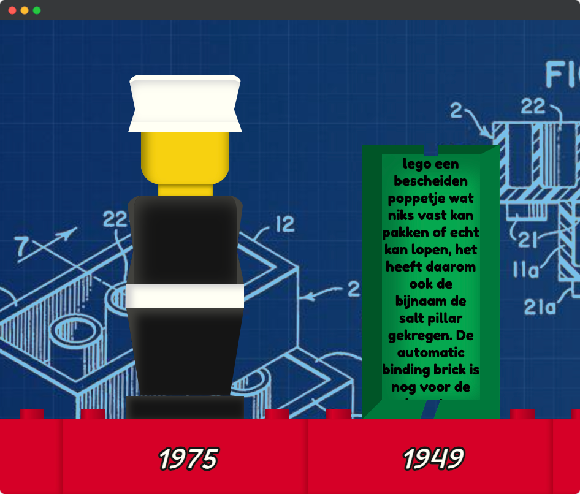
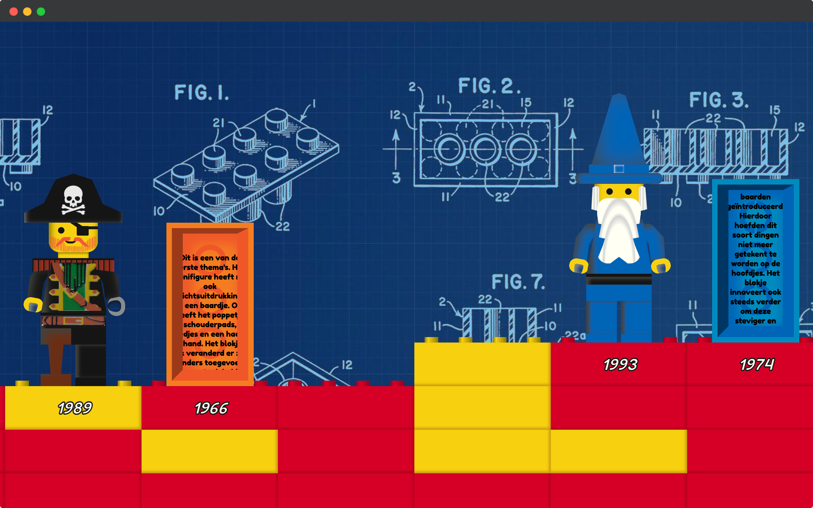
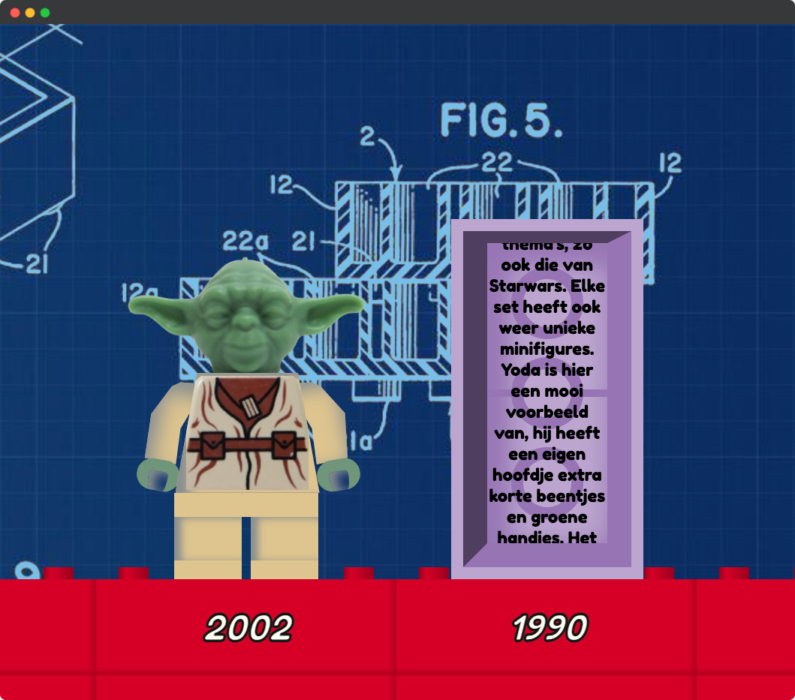

Lego timeline
Voor het vak interface en interactie heb ik een tijdlijn ontworpen die de evolutie van lego door de jaren heen laat zien. Deze tijdlijn is in de vorm van een website en begint bij het eerste lego poppetje in 1975 en eindigt bij het lego-poppetje zoals wij hem vandaag de dag kennen.
Website 
- 
- 
- 

De website is gemaakt met HTML, CSS en JavaScript. De poppetjes zijn volledig gemaakt in CSS op een aantal stickers na. Elk poppetje heeft ook zijn eigen bijpassende interactie zoals geluid of animatie. Bij elke stap op de tijdlijn staat naast het poppetje ook nog een blokje dat wat toelichting geeft over hoe lego is 'geëvolueerd' in dat jaar. Verder heb ik veel interactie toegevoegd aan de tijdlijn om het zo speels mogelijk te maken, dit hoort namelijk ook gewoon bij lego.